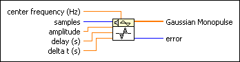
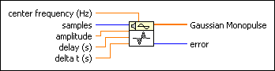
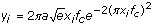

Gaussian Monopulse VI
Owning Palette: Signal Generation VIs
Requires: Full Development System
Generates an array that contains a Gaussian monopulse.

 Add to the block diagram Add to the block diagram |
 Find on the palette Find on the palette |
Owning Palette: Signal Generation VIs
Requires: Full Development System
Generates an array that contains a Gaussian monopulse.

| Add to the block diagram |
Find on the palette |
 |
center frequency (Hz) is the center frequency, or frequency of the carrier, in Hertz. The default is 1. |
 |
samples is the number of samples of the Gaussian Monopulse. If samples is less than 1, the VI sets Gaussian Monopulse to an empty array and returns an error. The default is 128. |
|
amplitude is the amplitude of the Gaussian Monopulse. The default is 1. |
|
delay (s) shifts the midpoint of the Gaussian Monopulse. The default is 0. |
|
delta t (s) is the sampling interval. delta t (s) must be greater than zero. If delta t (s) is less than or equal to zero, the VI sets Gaussian Monopulse to an empty array and returns an error. The default is 0.1. |
 |
Gaussian Monopulse is an array that contains a Gaussian monopulse of samples. |
 |
error returns any error or warning from the VI. You can wire error to the Error Cluster From Error Code VI to convert the error code or warning into an error cluster. |
If the sequence Y represents Gaussian Monopulse, the Gaussian Monopulse VI generates the pattern according to the following equations.

and
Xi = i* Δt-d
for i=0,1,…N—1,
where a is the amplitude, d is the delay, fc is the center frequency (Hz), and N is the samples.
The Gaussian monopulse has a very low DC component and a wide bandwidth.